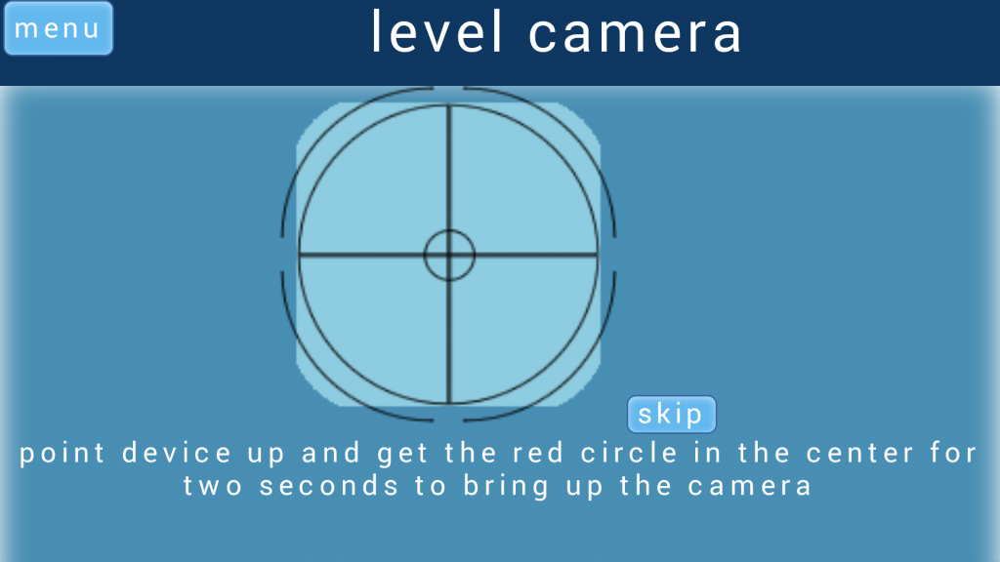
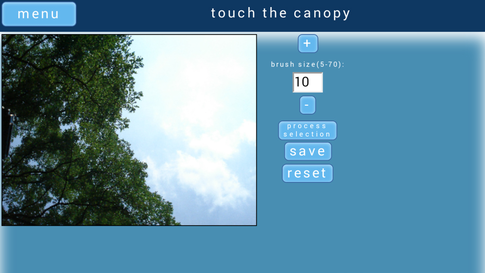
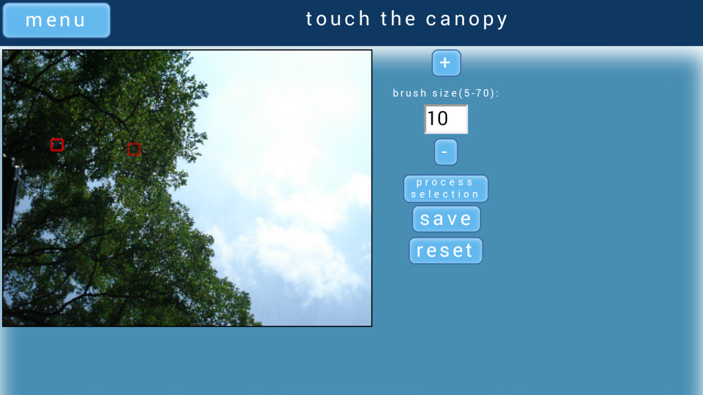
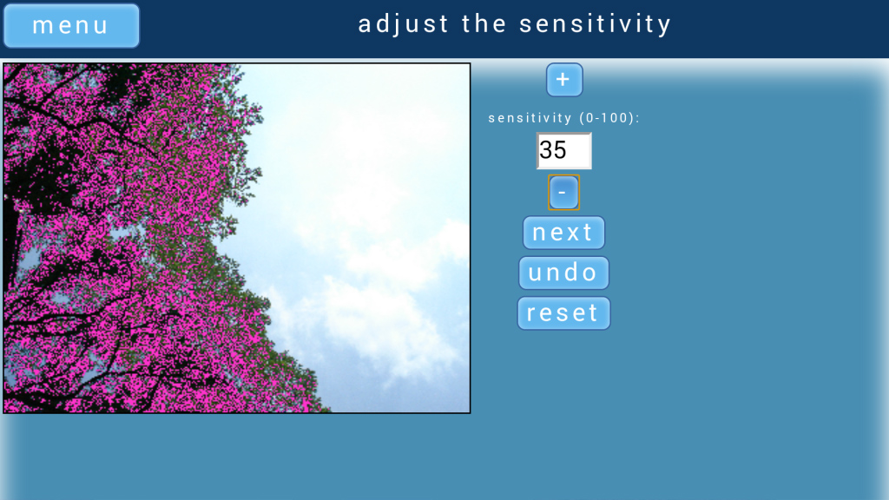
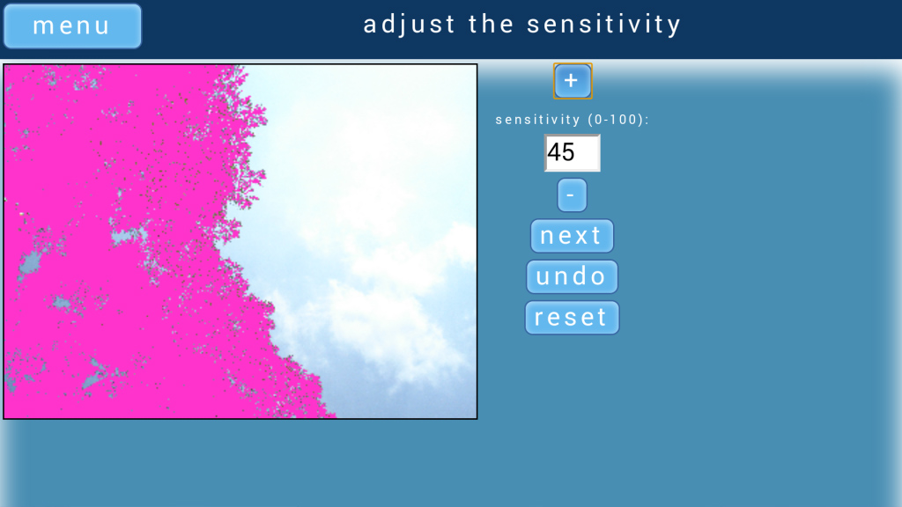
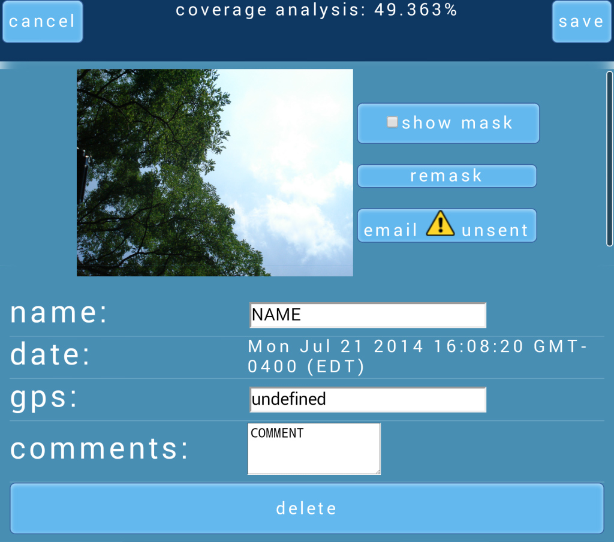

step 1: taking a photo
first, touch the "take photo" button on the main menu. then, you'll find yourself on this page:

the image in the center is a gyroscope, which will help you level the device. point it up, or, if you have a two-way camera, down, and get the red dot
to the center of the gyroscope. keeping the dot in the center will open the camera automatically. you can also skip this process
step 2: creating the mask
after you've taken the photo, you'll be taken to the mask creation page

you can either create the mask or skip this step. to start creating the mask, touch some of the canopy colors. it tends to be easier if the darker colours are selected first. to skip, press "save"

the touched points will be outlined by a red box, as shown here. the "brush" can be made bigger by changing the number at the right or pressing the + and - buttons. press "process selection" on the right to generate the mask
as you can see, not much of the canopy was masked out. we can fix that by increasing the sensitivity

by increasing it to 35, more of the canopy has been masked out. this is what we want, so we press the "next" button to set it

repeat this process until you've nearly masked the entire canopy.
step 3: organizing your photos
when you're done with the mask or you skipped processing, you'll find yourself here...

this page shows all the details about your photos and allows you to delete, email them or remask them, if you're not happy with the first mask or skipped the process the first time around.
the email button will email your photo and the mask to your email, specified in the settings page, along with all of its associated details.
to see the mask you created, click the "show mask" button. when you're done, click "save" or "cancel." note that cancel won't save any names, gps values or comments
you've entered.
this picture has the default values for its name and comments, and finding its gps coordinates failed. if you're still at the picture site, you can press "get current gps"
to try grabbing your coordinates again
next is the archive page. this is where all your photos are stored. clicking on any block of information will bring you to that photo's details page.
the yellow exclamation marks mean that the photo has not been uploaded. to quickly upload all of the unuploaded photos, simply click the "upload all" button.
if you'd like to export all of your data to CSV format, there's a button for that, too. your data will be displayed for you before you email it, so you can double-check its accuracy
when you're done browsing your photos, press the index button
step 4: fixing your settings
you'll find yourself back on the main menu. from here, press settings.
on the settings page, you can specify your email address and what you'd like the default photo name to be. you can also automatically skip the analysis process to do at a later time
now you know the basics! go forth and conquer!